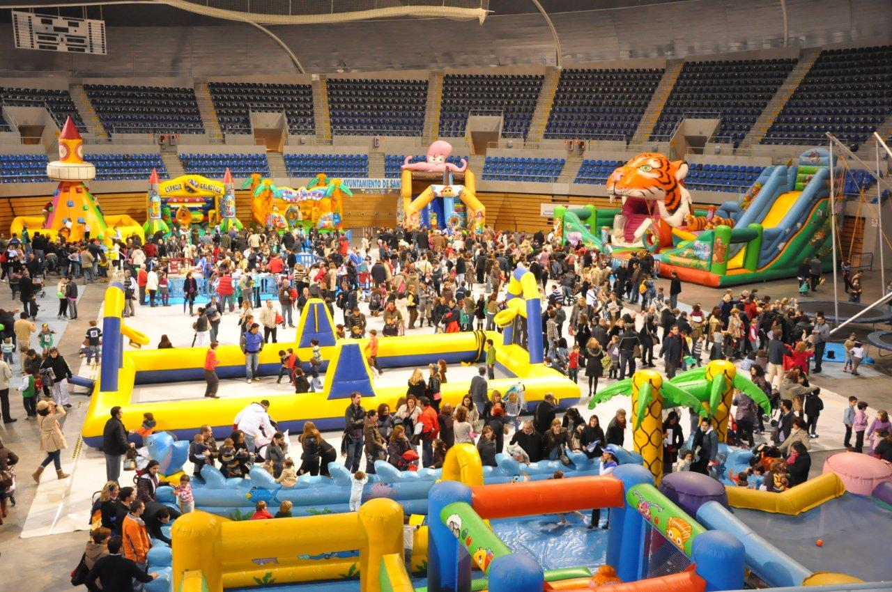
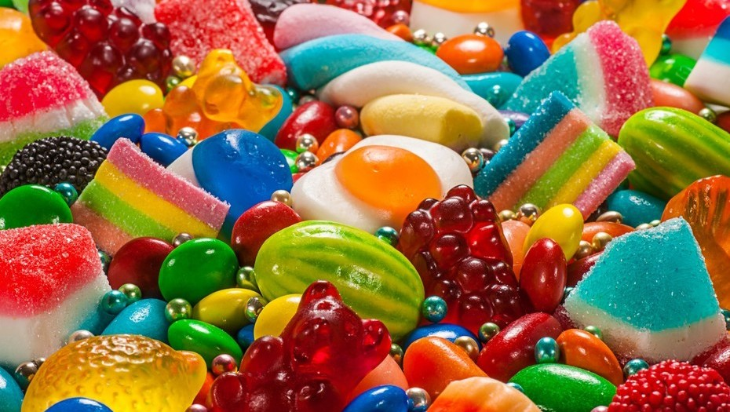
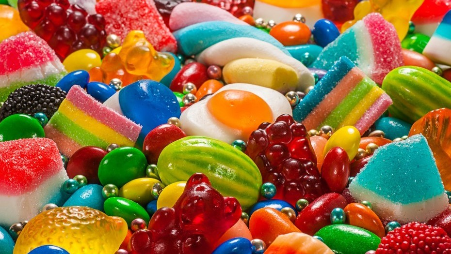
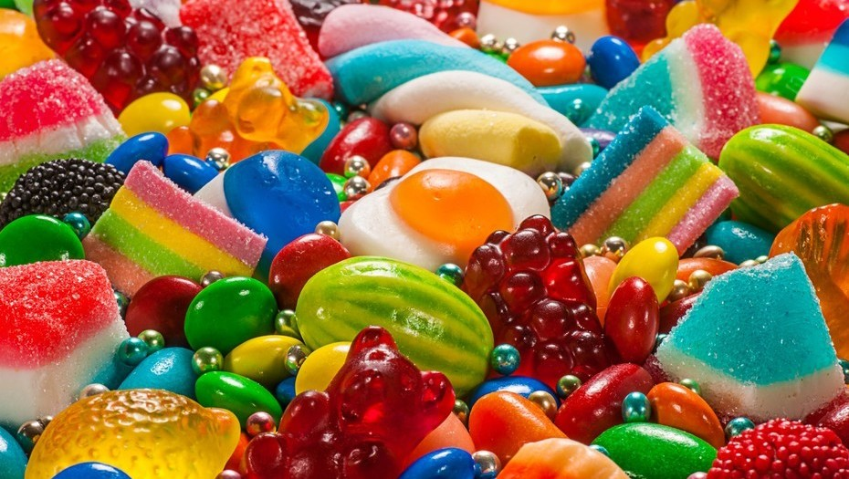
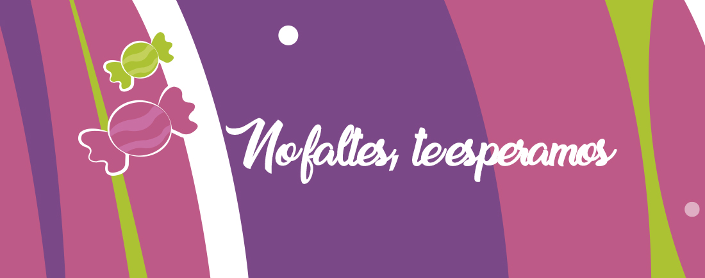
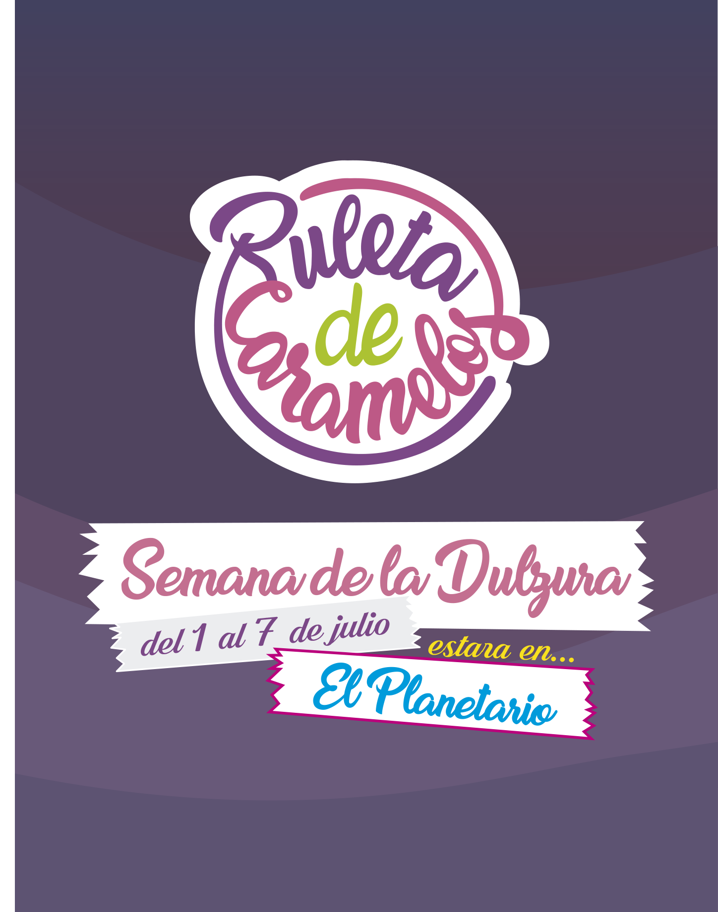

 



Ruleta de caramelos
El evento Ruleta de Caramelos de Buenos Aires tiene una superficie de más de 45.000 metros cuadrados y es el más concurrida en el mundo de habla hispana. Durante su semana de duración la visitan más de un millón de degustadores y más de doce mil profesionales de los dulces Argentinos. Se realizarán actividades destinadas a consumidores y profesionales de la cadena de valor alimenticio.
El acto de inauguración de Ruleta de Caramlos se llevará a cabo el jueves 1 de julio a las 10:00 en el planetario de Palermo y alrededores. El discurso de apertura estará a cargo de nuestros conocidos y queridos personajes del evento. El espectáculo de galaxia de caramelos será en el interior del planetario para la comodidad del público y de los organizadores del evento, y para prevenir accidentes en caso de lluvias inesperadas o cambios de clima.
En cada entrada hay cabinas de información que ayudan a los visitantes a guiarse y seguir el recorrido marcado a través de las actividades, ellos tienen la opción de seguir el camino guiado, o para los que quieran aventurarse solos, pueden buscar su propio rumbo.
El espectáculo de galaxia de caramelos será en el interior del planetario, ya que esa es la atracción principal, junto con el escenario donde estarán nuestros grandiosos amigos, y estará ubicado en chocos, la cual es la Segunda sección del evento.
Gracias por venir.
Sectores
Malvis
Es la más importante de las tres por su posición inicial al comenzar el recorrido y por tener en su espacio las actividades más importantes. Allí se brindara orientación a los invitados para guiarlos a través de la experiencia según sus gustos y necesidades y se les otorgara también un número para participar en las rifas y competencias del evento a lo largo del recorrido.
Chocos
Es una de las dos submarcas restantes después de malvís que ocupa el segundo lugar en el recorrido. Es la que nos sigue guiando a través de la gran aventura del mundo de ruleta de caramelos y la que nos va ubicando, a medida que se va acercando el momento, a nuestros lugares dentro del planetario para que todos podamos disfrutar de la función y podamos viajar juntos a la lejana “galaxia de caramelos” que forma parte de nuestro espectáculo principal, y en donde los invitados podrán ver el mundo desde los ojos del evento.
VER MAS...Gomis
Es uno de los sectores para los más chicos, es la última sección del parque y en la que se despide a todos nuestros invitados, donde se otorgan los premios a los ganadores y se les brinda aliento a aquellos que quieran seguir participando del evento, o simplemente nos da una despedida amistosa al momento de dejar el parque, todo para que la experiencia tenga un lindo cierre y se convierta así en un recuerdo inolvidable y feliz para todos los que nos han visitado.
VER MAS...